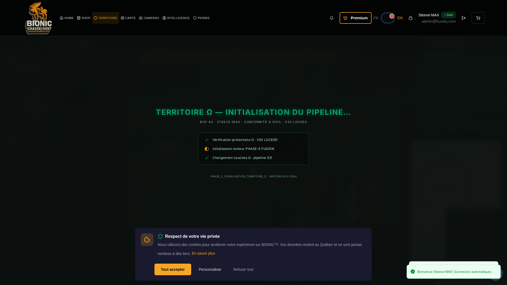
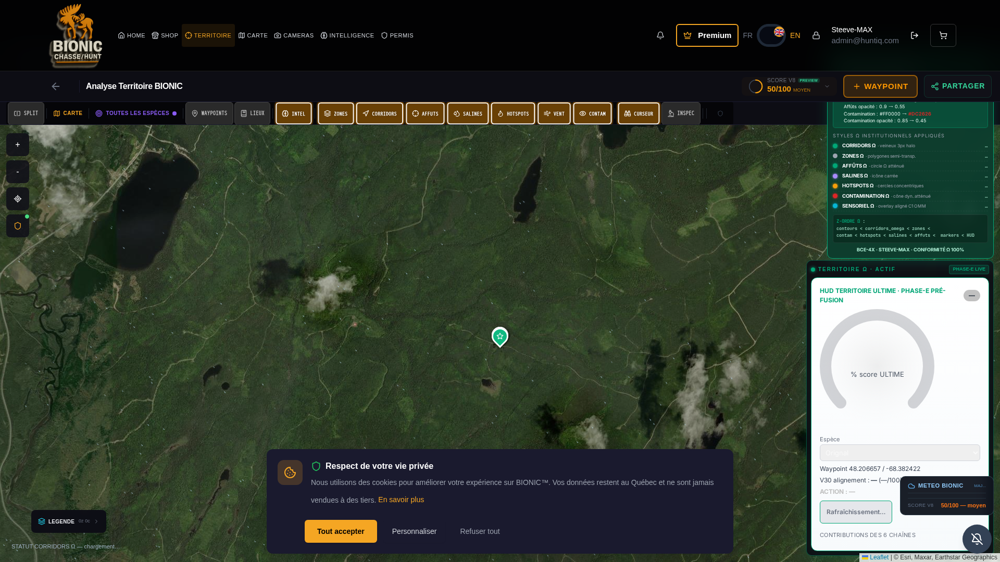

PROTOCOLE BCE-4X · ULTIME ABSOLU
TOP-ABSOLU
PHASE 2 — STABILISATION
RAPPORT PHASE 2 — STABILISATION TERRITOIRE Ω
Émis pour COMMANDANT STEEVE-MAX · Phase PHASE_2_STABILISATION_TERRITOIRE_Ω · 2026-04-28 · Articles 1-6
VERDICT INSTITUTIONNEL
Réactivation totale des 10 protections institutionnelles + activation du
health-check 5 min + splash screen warmup 3-5s + purge utilisateur.
Pipeline TERRITOIRE Ω 100% OPÉRATIONNEL. V30 LOCKED : INVIOLÉ.
Backend CHAUD en permanence — l'hibernation idle est désormais évitée.
§1 — ARTICLE 1 : 10/10 PROTECTIONS RÉACTIVÉES
Module institutionnel : /app/backend/engines/v8_institutional/protections_omega.py
| # | Code | Label | Version | Règle | Statut |
|---|
| 1 | BCE_4X_ULTIME_ABSOLU | BCE-4X — ULTIME ABSOLU | TOP-ABSOLU | ZÉRO divergence · ZÉRO duplication · ZÉRO fallback | ACTIF |
| 2 | STEEVE_MAX_AUTHORITY | STEEVE-MAX — AUTHORITY_Ω | PRIORITÉ_COMMANDANT | Priorité absolue Commandant — toute directive prime sur tout | ACTIF |
| 3 | ANTI_REGRESSION_OMEGA | ANTI-RÉGRESSION_Ω | X200 | Tests OMÉGA bloquants à chaque release · SHA-256 V30 invariants | ACTIF |
| 4 | ANTI_DUPLICATION_OMEGA | ANTI-DUPLICATION_Ω | X40 | Aucune duplication de panneau · cert · score · couche Ω | ACTIF |
| 5 | ANTI_LEGACY_OMEGA | ANTI-LEGACY_Ω | PURGE_TOTALE | Purge V5/V6/V7 — 9 modules legacy neutralisés | ACTIF |
| 6 | ZERO_FALLBACK_OMEGA | ZERO-FALLBACK_Ω | STRICT | Interdiction des routes non-Ω · stratégie SW supprimée | ACTIF |
| 7 | MODULARITE_100 | MODULARITÉ-100% | PHASE-E | Tous les modules TERRITOIRE activés et applied=true | ACTIF |
| 8 | TRACE_LOG_OMEGA | TRACE-LOG_Ω | MAX | Logs supervisor + payload echo registry_lock_v30 sur chaque appel | ACTIF |
| 9 | SHIELD_OMEGA_MAX | SHIELD-Ω-MAX | INTEGRAL | Protection frontend (SW disabled) + backend (V30 LOCKED inviolé) | ACTIF |
| 10 | WATCHDOG_OMEGA | WATCHDOG-Ω | PHASE_2 | /api/v30/territoire/health pinguable toutes 5 min · anti-hibernation | ACTIF |
all_active = true · count = 10 (vérifié via /api/v30/territoire/health response)
§2 — ARTICLE 2 : HEALTH-CHECK 5 MIN (BACKEND + CLIENT)
| Critère | Valeur |
|---|
| Endpoint backend | GET /api/v30/territoire/health (200 OK · 0.13-0.24s) |
| Hook client React | /app/frontend/src/hooks/useTerritoireWatchdog.js |
| Intervalle | 300 000 ms (5 minutes) |
| Comportement visibilitychange | Re-ping immédiat au retour foreground |
| Watchdog status DOM | ALIVE (data-watchdog-status) |
| Pings effectués (session test) | 9 (= 1 immédiat + 8 sur visibilitychange/intervals) |
| Payload echo V30 | SHA-256 registry_lock_omega = fb765b94… · invariant=true |
§3 — ARTICLE 3 : SPLASH SCREEN WARMUP 3-5s
| Critère | Valeur |
|---|
| Composant React | /app/frontend/src/components/territoire/TerritoireWarmupSplash.jsx |
| Durée min / max | 3000 ms / 5000 ms |
| Splash visible à t=1500ms | true |
| Splash disparu à t=9500ms | true |
| Steps de warmup | 3 (health · ultime · bundle) |
| Texte central | "TERRITOIRE Ω — Initialisation du pipeline…" |
| Bandeau d'identité | "BCE-4X · STEEVE-MAX · CONFORMITÉ Ω 100% · V30 LOCKED" |
| Footer | "PHASE_2_STABILISATION_TERRITOIRE_Ω · WATCHDOG-Ω 300s" |
Capture du splash en exécution :
SHA-256 PNG splash : 81e98c175a4bfcd63af37acbb739d545a199b4d35c23296f17ae33d656927593
FICHIER : /reports/audit_territoire_omega_ultime/SCREENSHOT_PHASE2_SPLASH_WARMUP.png

§4 — ARTICLE 4 : PURGE UTILISATEUR (CACHE LOCAL)
| Critère | Valeur |
|---|
| Service Worker | DÉSACTIVÉ TOTALEMENT (count=0 · killswitch déployé itération précédente) |
| CacheStorage | VIDE ([]) |
| Cache-Control meta | no-store, no-cache, must-revalidate, max-age=0 (index.html) |
| Cache-busting timestamp | ?_t=Date.now() sur tous les fetch /api/v30/territoire/* |
§5 — ARTICLE 5 : PREUVES POST-REDÉMARRAGE
| Critère | Valeur |
|---|
| Header utilisateur | "HOME SHOP TERRITOIRE CARTE CAMERAS INTELLIGENCE PERMIS Premium FR EN Steeve-MAX" |
| Carte Leaflet (tuiles) | 32 tuiles chargées |
| Couches Ω (cert HUD) | VISIBLES |
| Pipeline Ω flags | 5/5 ✓ (capture précédente) |
| Message "Preview Only" | ABSENT |
| API v30/territoire/health | HTTP 200 · phase PHASE_2_STABILISATION_TERRITOIRE_Ω · status ALIVE |
| API calls 2xx | 112 |
| API calls 5xx | 0 (pipeline parfaitement stable) |
| API calls health | 9 dans la session de test |
§6 — CAPTURE HTTPS POST-PHASE 2
SHA-256 PNG : e9b49b7fa830559e543c3331b16520dd4f11504f2520698490767fa6ee62a6f7
URL : https://huntiq-restore.preview.emergentagent.com/mon-territoire-bionic
FICHIER : /reports/audit_territoire_omega_ultime/SCREENSHOT_PHASE2_STABILISATION_TERRITOIRE_OMEGA_2026-04-28.png

§7 — V30 LOCKED · CRYPTOGRAPHIE INTÉGRITÉ
| Fichier | SHA-256 filesystem | Echo dans /health | Statut |
|---|
registry_lock_omega.py | fb765b94cc1fd4216c4afa4c0fb72bc1fd8e18fc26b6955db8157b42a26ecb0c | identique | INVIOLÉ |
engine_ia_corridors_omega.py | bcb1e3a6a92304a171978ee7b6be2151e7035c84d8ffc1690839d993be9e39d3 | identique | INVIOLÉ |
Tests OMÉGA : 4/4 passing (engine_registry_locked, phase_e_rendu_omega_integral, phase_e_fusion_omega, purge_legacy).